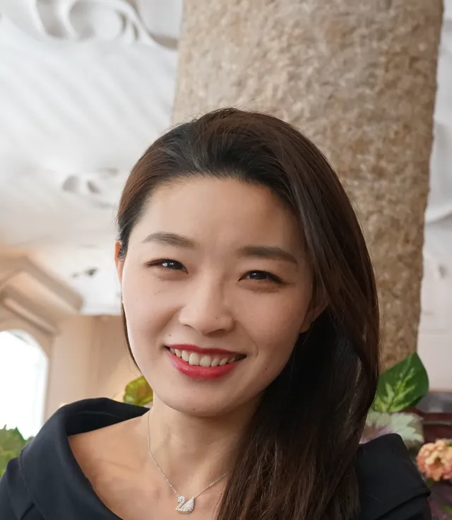
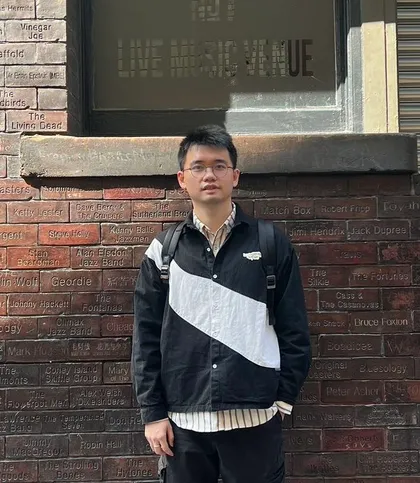
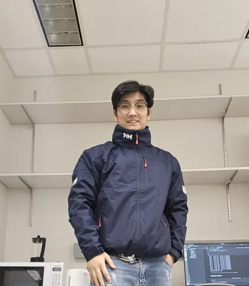
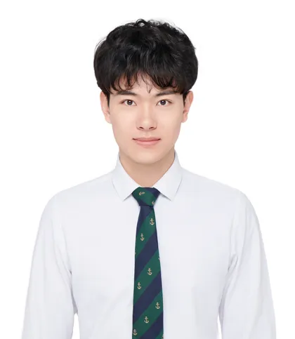
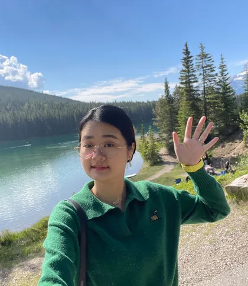
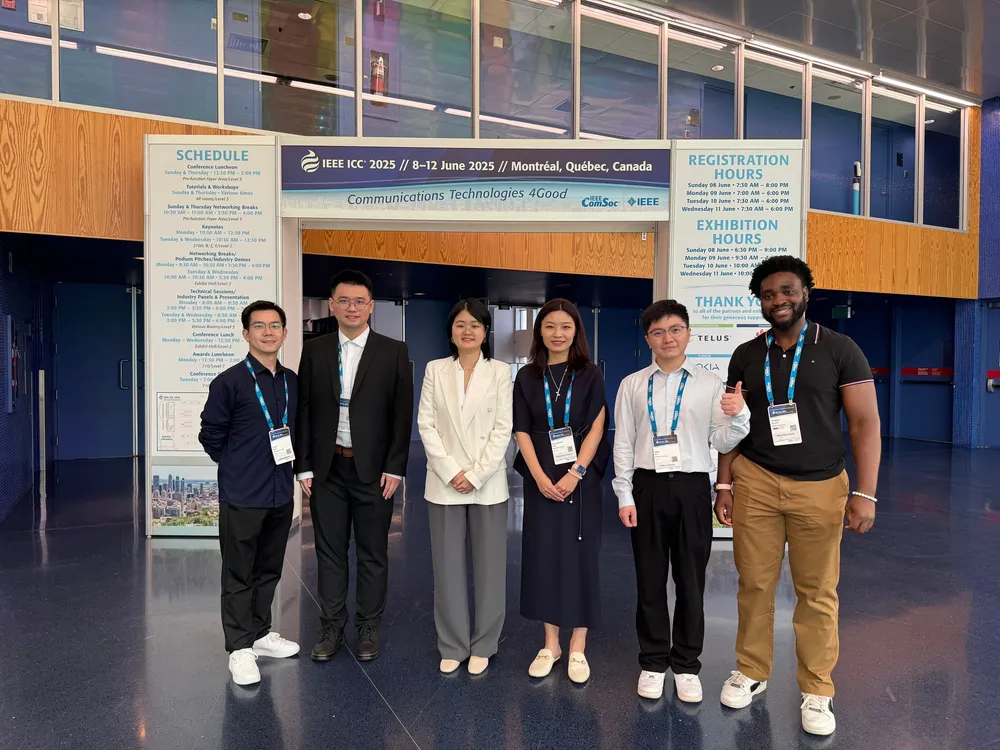
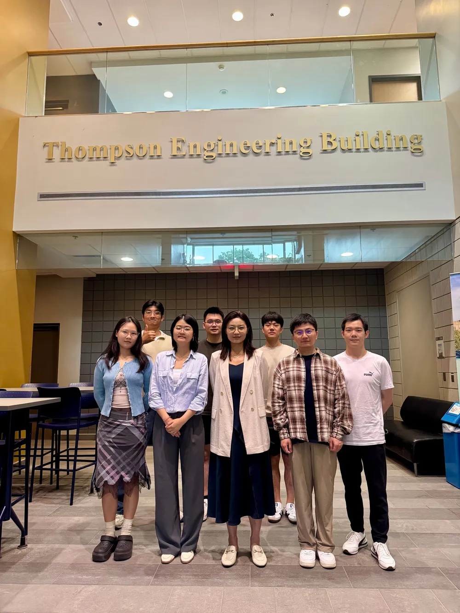
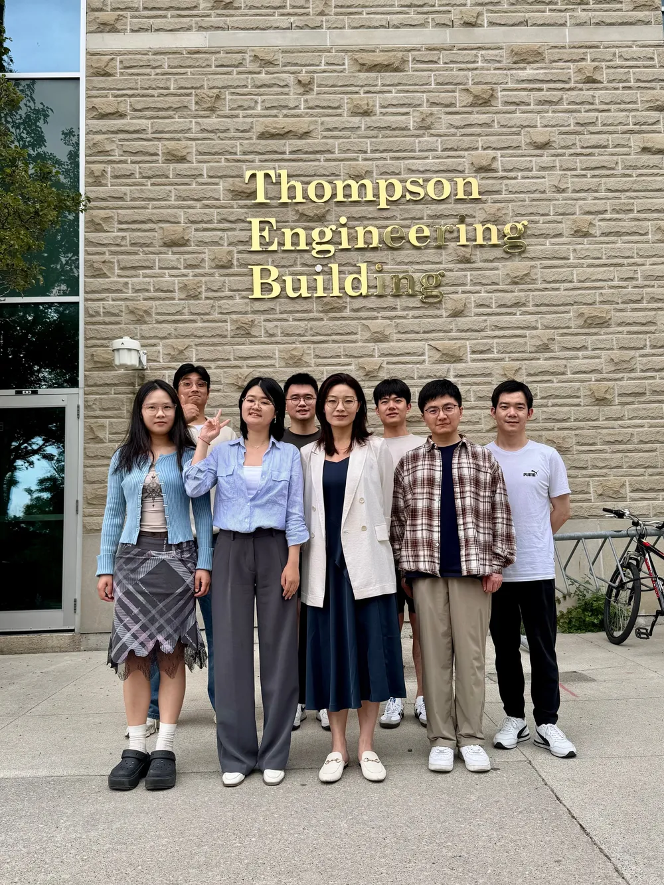

People
Dr. Fang (Fiona) Fang leads the lab with postdoctoral researchers, Ph.D. and MESc students, and a growing group of alumni.

Fang (Fiona) Fang, Ph.D.
Assistant Professor
Department of Electrical & Computer Engineering and Department of Computer Science, Western University, Ontario, Canada
Dr. Fang Fang received a Ph.D. degree in electrical engineering from the University of British Columbia (UBC), Canada, in 2017. She is currently an Assistant Professor in the Department of Electrical and Computer Engineering and the Department of Computer Science, Western University, Canada.
Prior to joining Western University, she was an Assistant Professor in the Department of Engineering at Durham University, UK, from 2020 to 2022, and a Research Associate in the Department of Electrical and Electronic Engineering at the University of Manchester, UK, from 2018 to 2020.
Research interests. Machine learning for intelligent wireless communications, non-orthogonal multiple access (NOMA), reconfigurable intelligent surface (RIS), multi-access edge computing (MEC), semantic communications, and edge AI.
Service
- General Chair, EAI GameNets 2022
- Publications Chair, IEEE VTC 2023 Fall
- Symposium Chair, IEEE Globecom 2023, IEEE VTC 2024 Spring, and IEEE ICC 2025
- Editor, IEEE Communications Letters
- Editor, IEEE Open Journal of the Communications Society (OJ-COM)
Awards and honors
- Engineering Junior Faculty Award for Excellence in Research, Western Engineering, 2024–2025
- IEEE SPCC Early Achievement Award, 2023
- Exemplary Editor, IEEE Open Journal of the Communications Society, 2023, 2021
- Exemplary Reviewer, IEEE Open Journal of the Communications Society, 2023, 2021
- Exemplary Reviewer (top 2%), IEEE Transactions on Communications, 2021 & 2017
Postdoctoral Researchers

Dr. Ximing Xie
Postdoctoral Associate
B.E. from Harbin Institute of Technology, M.S. from University College London, and Ph.D. from The University of Manchester. Currently a postdoctoral associate at Western University.
Ph.D. Students

Guan Qiang
Ph.D. Student
Bachelor’s degree from Shanghai University; pursuing a Ph.D. at Western University.
Bibo Wu
Ph.D. Student
B.E. and M.E. from Chongqing University; pursuing a Ph.D. at Western University, Canada.

Yushen Chen
Ph.D. Student
B.S. (Hons.) and M.S. in computer science from Western University, Canada, in 2023 and 2025; pursuing a Ph.D. in the Department of Computer Science at Western.
Saba Habibi
Ph.D. Student
Pursuing a Ph.D. degree in Electrical and Computer Engineering.
Xiaoyu Ma
Ph.D. Student
M.S. from Beijing University of Posts and Telecommunications; pursuing a Ph.D. at Western University, Canada.
MESc Students
Oladayo Richard Ogunjimi
MESc Student
MESc student researching semantic communications, developing solutions that use semantic technologies to improve communication efficiency.
Alumni

Dr. Hong Chen
Former Postdoctoral Associate (2023–2025)
Ph.D. from McMaster University (2023). Postdoctoral Associate at Western University from 2023 to 2025. Since July 2025, Assistant Professor and Cisco Research Chair in IoT, Department of Electrical and Computer Engineering, University of New Brunswick.
Junjie Wang
Former Visiting Ph.D. Candidate
Visiting Ph.D. candidate from Zhengzhou University; B.Eng. in information engineering from Zhengzhou University (2018).
Ling Zhuang
Former Visiting Ph.D. Candidate
Visiting Ph.D. candidate from Nanjing University of Information Science and Technology (NUIST); B.Eng. in electronic information engineering from NUIST (2018).
Lab life


